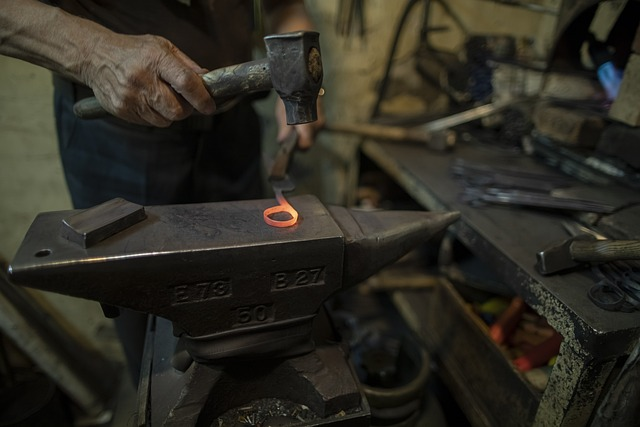

Nuestros servicios de herrería cerca de San Luis
Descubre los servicios que ofrecemos para satisfacer tus necesidades
Estructuras metalicas
Diseño y construcción de estructuras metálicas a medida para proyectos residenciales, comerciales e industriales
Puertas y Portones
Fabricación de puertas y portones de metal personalizados, combinando seguridad y elegancia en cada diseño
Rejas y Barandas
Instalación de rejas y barandas en San Luis de metal para mejorar la seguridad y embellecer tu propiedad con un toque estético.
Muebles de Herrería
Creación de muebles únicos y duraderos, desde mesas y sillas hasta piezas de arte funcional en metal.
Restauración de elementos metálicos
Recuperación y restauración de elementos metálicos, preservando su autenticidad y encanto original.
Esculturas de Metal
Diseño y fabricación de esculturas personalizadas en metal para enriquecer espacios interiores y exteriores.
Soldadura y Reparación
Servicios de soldadura experta para reparar y reforzar estructuras metálicas, garantizando durabilidad y seguridad.
Asesoramiento y presupuesto
Colaboramos contigo en el diseño y presupuestos de proyectos personalizados, ofreciendo asesoramiento para lograr funcionalidad y estética perfectas
Contacto
VISITE O LLAME PARA PROGRAMAR UNA CONSULTA Y DESCUBRIR CMO PODEMOS AYUDARLE.
¡HAZ CLICK PARA LLAMAR! AL +541111111111!
Fin del Espacio Publicitario
Elija una localidad
Alto Pelado
Alto Pencoso
Anchorena
Arizona
Bagual
Balde
Batavia
Beazley
Buena Esperanza
Candelaria
Carolina
Carpintería
Cazador
Cerro de Oro
Chosmes
Concarán
Cortaderas
Desaguadero
El Trapiche
El Volcán
Estancia Grande
Fortín El Patria
Fortuna
Fraga
Jarilla
Juan Jorba
Juan Llerena
Juana Koslay
CERRO COLORADOCRUZ DE PIEDRA
EL CHORRILLO
LAS CHACRAS
SAN ROQUE
Justo Daract
La Bajada
La Calera
La Florida
La Maroma
La Punilla
La Punta
CIUDAD DE LA PUNTALa Toma
La Vertiente
Lafinur
Las Aguadas
Las Chacras
Las Lagunas
Lavaisse
Leandro N. Alem
Los Cajones
Los Molles
Los Overos
Luján
Martín de Loyola
Merlo
Mosmota
Nación Ranquel
Nahuel Mapá
Naschel
Nogolí
Nueva Galia
Papagayos
Paso Grande
Potrerillo
Potrero de los Funes
Quines
Renca
Río Grande
Riocito
Saladillo
Salinas del Bebedero
San Francisco del Monte de Oro
San Jerónimo
San José del Morro
San Luis
San Martín
San Pablo
Santa Rosa del Conlara
Talita
Tilisarao
Unión
Villa de la Quebrada
Villa de Praga
Villa del Carmen
Villa General Roca
Villa Larca
Villa Mercedes
LA RIBERAVilla Reynolds
5TA BRIGADACOUNTRY CLUB LOS CALDENES